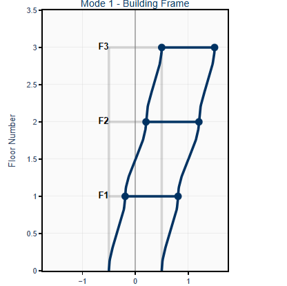
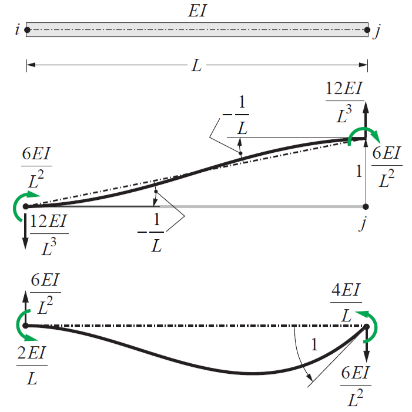
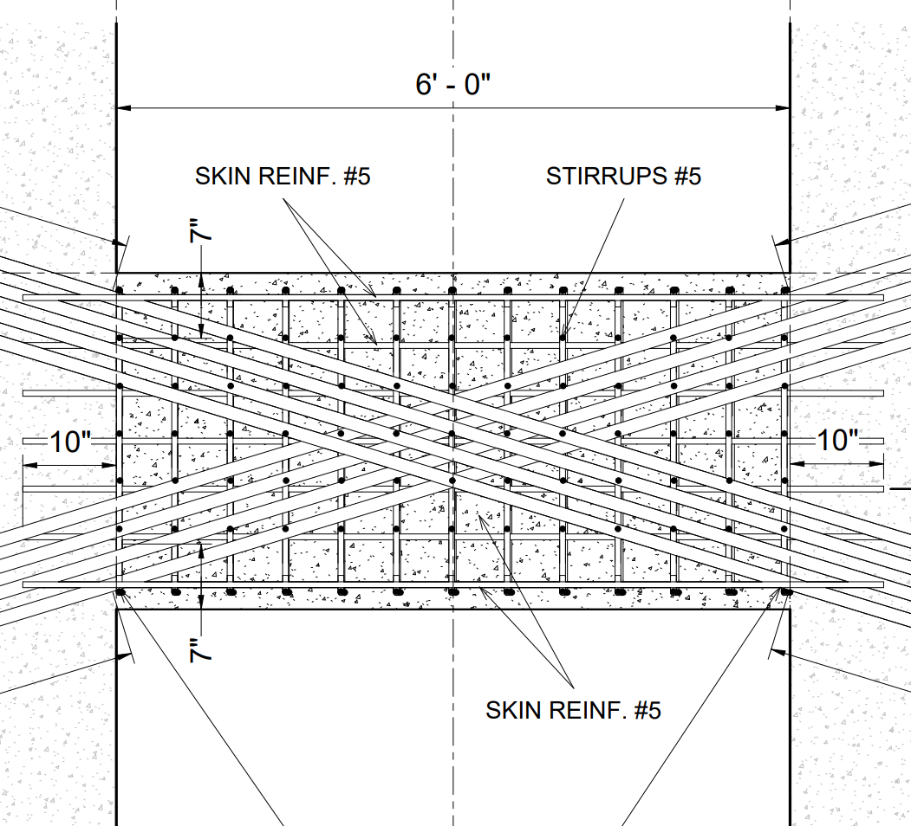
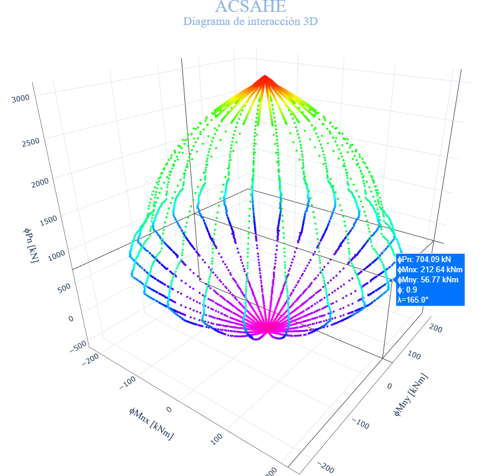

CEE225 - Structural Dynamics
Dynamics of structures: SDOF theory, numerical methods, and spectra.
Facundo L. Pfeffer — UC Berkeley MS student in Structural Engineering (SEMM). I build research-grade software and methods for structural dynamics, nonlinear analysis, and earthquake engineering.
Berkeley, CA • UC Berkeley SEMM

Dynamics of structures: SDOF theory, numerical methods, and spectra.

Constitutive behavior, anisotropy, and interactive directional E visualizations.

1DOF workflow, P–Δ cantilever, χara FE comparison, axial force diagnostics.

Matrix methods and truss analysis; statically determinate systems.

Seismic design of RC buildings: base isolation, shear walls, and ACI 318 applications.

Open-Source software that generates biaxial P-M interaction diagrams for arbitrary prestressed concrete sections. ACI 318-19.
Background, research interests, skills, and SEMM journey.
Joined STAIRlab at UC Berkeley, where I'll be developing novel finite element formulations for structural health monitoring of bridge structures, leveraging my software development and structural analysis background.
Learn more →Successfully completed my first semester in the SEMM program at UC Berkeley with a perfect 4.00/4.00 GPA. Grateful for the challenging coursework in structural dynamics, solid mechanics, and computational methods.